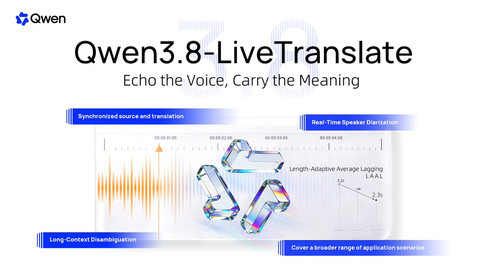
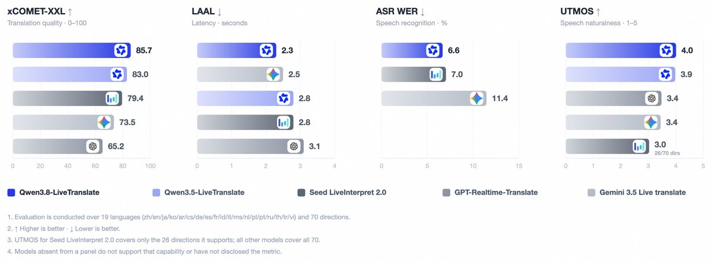
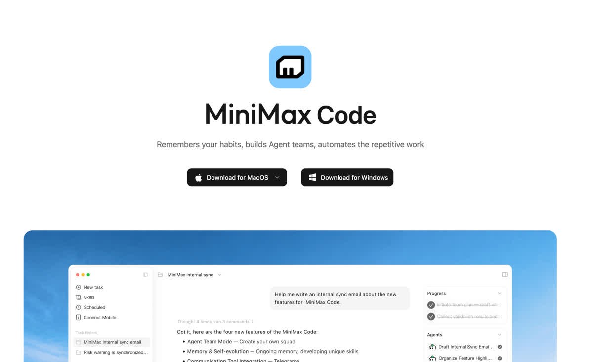
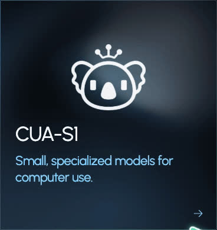

AI Intelligence Daily · 2026-09-20
专栏一｜新闻
1. 智谱 ZCode：静默工作区上传争议 + 社群致歉
事实
社区逆向称 Desktop 后台打包工作区（含 .git 等）加密上传 OSS；官方社群承认为代码库索引 / Repo Wiki，默认开启，称已修复并将开源 + 第三方审计，另有周额度重置致歉。官网未见独立致歉页。
判断
一线 Coding Desktop 的数据最小必要与委托边界硬信号；开源仓与审计报告仍未落地，未结案。
社区逆向 · DoNews · Repo Wiki 文档
2. ZCode Desktop 3.14.0：动态多 Agent + 修复异常上传
事实
官方 changelog 发布 3.14.0：脚本化多子代理工作流、办公/编程模式、CUA 优化、审批可授完全访问；修复首条写明「仓库百科异常上传」。下载页标 v3.14.0；开源/审计仍未见。
判断
安全事件的版本落盘 + 多 Agent 编排产品化——Work 引擎即时对照样本。
3. Plugin4Shell：插件市场零点击供应链 RCE
事实
AIR 披露：Claude Code / Codex / Copilot / Gemini CLI 在 marketplace pin SHA 检出时未校验是否真落在该 commit；同名 branch + 后台 auto-update 可零点击替换插件致宿主 RCE。文称 Claude Code 2.1.179 已确认修复。
判断
Skill/Plugin 分发层升格为供应链一等公民——与 Agent 能力生态、Harness 自动更新直接同构。
4. Qwen3.8-LiveTranslate：实时同传
事实
@Alibaba_Qwen 宣布 LiveTranslate：Interleave 架构；宣称 LAAL 2.8s→2.3s、60 语种。官网 blog 本轮 CSR，一手以官方 X 为准。互动约 1742 likes / ~190k impressions。
判断
全模态线后的低延迟流式专用档；对实时 Agent 有信号，协议/Harness 撞击弱于 Desktop 事故线。


5. Qoder：Qwen3.8-Flash 限时 0 费率（至 9/30）
事实
个人用户 Flash 档系数 0.1×→0.0×，不耗 Credits；团队/企业除外；覆盖 IDE/CLI/Wake/Cloud Agents 等。
判断
成本与模型菜单竞争信号，非 Runtime 级 shipping。
6. Claude Code 2.1.278：Auto mode 默认服务端 classifier
事实
v2.1.278：Claude API/Enterprise 与 Bedrock/Vertex/Foundry/gateway 上，auto mode 默认改走 server-side classifier（不收 classifier overhead；可用 CLAUDE_CODE_AUTO_MODE_SERVER=0 退出）。/status 新增 Auto mode server 行。
判断
自动批准闸门的信任边界与计费路径服务端化——Harness 级配置信号。
专栏二｜话题热议
Muse 周复盘 + connectors 案例串
@Muse 汇总 Mac / Canada / connectors / developer platform；社区使用案例密集。connectors 文档仍 404。
Hacktron「Hacking OpenAI」HN 高热
论坛 RCE + SSO 误配链条（发现于 7 月）在 HN 约 483p/206c。作热议；Agent 连接器扩大爆炸半径的讨论素材。
专栏三｜开源雷达
MiniMax-code：★≈721→1224，无 Release tag
开源次日星标接近翻倍；npm 仍 0.4.12。建议拆权限/ACP，Watch 首 tag。

BrowserSkill：★≈4107→5724
无新于 cli-v0.3.0 的 tag；关注下一 release 与 remote gateway 安全模型。
CUA-S1（trycua/cua）：Computer Use System-1 小模型
窄域 GUI 决策小模型族；源码 MIT，权重在 HF。对照「规划模型 + 动作小模型」双环。

趋势与启示
趋势
- Desktop 信任审计进入「带日期 changelog」时代，但仍缺开源/第三方审计闭环。
- 插件市场 pin + auto-update = 新供应链根（Plugin4Shell）。
- Computer Use 分层：产品 CUA 优化 ∥ 研究 S1 专用小模型。
- 国内 Coding Agent 用价格与开源抢个人开发者。
智能体互联网
能力挂载信任根（checkout 校验）；仓库快照与全量 Git 上云拆权。
Work / Agent 引擎
多子代理 workflow DSL；插件自动更新回归；评估 CUA-S1 是否入环。
价格雷达
Qoder × Qwen3.8-Flash 个人用户 0.0× 至 2026-09-30 23:59:59 +08；团队/企业除外。其余未见重要新调价。